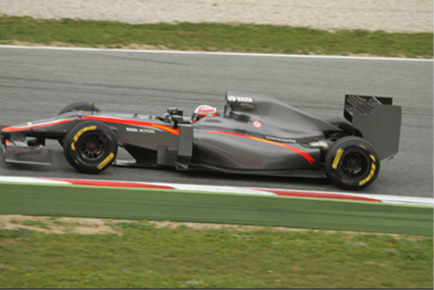
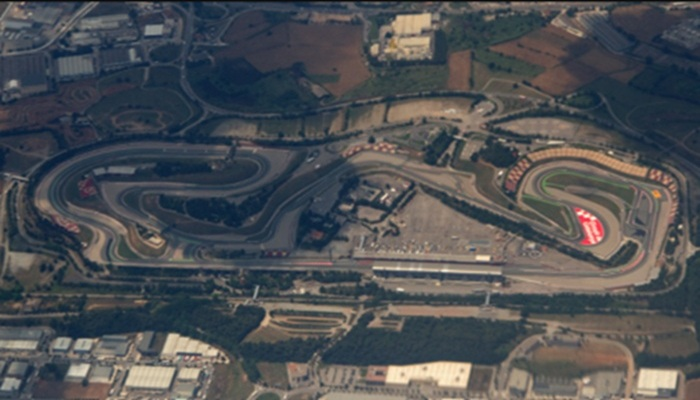

El Gran Premio
El Gran Premio de Barcelona-Catalunya es una prueba del campeonato de Fórmula 1 que se celebra en el Circuit de Barcelona-Catalunya.
En 2026 se celebró del 12 al 14 de junio. Durante ese fin de semana también participaron las categorías de Fórmula 2 y Fórmula 3.
Información del evento
- Fecha: 12 al 14 de junio de 2026
- Fórmula 1
- Fórmula 2
- Fórmula 3
Imágenes

